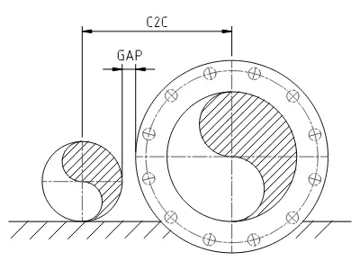
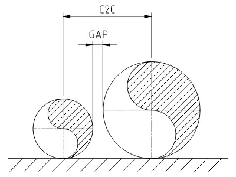

Advanced Pipe Spacing Calculator
User Guide
1. Purpose and Logic
The Advanced Pipe Spacing Calculator, is a tool designed for Engineers involved in the field of Piping Engineering. It calculates the minimum Center-to-Center (C2C) distance in mm, required between multiple parallel pipelines, to prevent physical interference and maintain design clearances, as dictated by project specifications and design requirements.
- Staggered Flange Assumption: The calculation logic assumes that flanges on adjacent lines are longitudinally staggered. The C2C is determined by the maximum distance required to clear the Pipe-to-Flange profile of both lines, while taking applied insulation into consideration.
- Calculation Formula: For each pipeline pair, the calculator performs two case studies:
Center-to-Center Calc - Case 1: $$ \text{C2C}_1 = (\text{Rad}_{\text{pipe}_1} + \text{Insul}_{\text{pipe}_1}) + (\text{Rad}_{\text{flange}_2} + \text{Insul}_{\text{flange}_2}) + \text{Gap} $$ Center-to-Center Calc - Case 2: $$ \text{C2C}_2 = (\text{Rad}_{\text{pipe}_2} + \text{Insul}_{\text{pipe}_2}) + (\text{Rad}_{\text{flange}_1} + \text{Insul}_{\text{flange}_1}) + \text{Gap} $$ Final Result: $$ \text{if } \text{C2C}_1 \ge \text{C2C}_2 \text{ ,then } \text{C2C} = \text{C2C}_1 $$ $$ \text{if } \text{C2C}_1 < \text{C2C}_2 \text{ ,then } \text{C2C} = \text{C2C}_2 $$the two values are compared and the larger one, indicating the worst-case scenario, is selected and displayed as the Center to Center distance between the pair of the two pipelines. Results are rounded up to the nearest 5mm.
- Pipe and Flange Diameters: Data are according to ASME B36.10M, ASME B16.5 (flanges up to NPS 24) and ASME B16.47 (Series A & Series B flanges NPS 26 through NPS 60).
User Interface
2. Global Settings
- Gap (mm): The minimum required physical clearance between the widest points of adjacent components (insulation or flange).
- Calculation Logic:
- Pipe - Flange: Factors in flange diameter for spacing, as well as insulation thickness, if present. 
- Pipe - Pipe: Flanges are omitted; calculates spacing based strictly on pipe OD and insulation thickness, if present. 
3. Pipeline Parameters
- Pipeline Name: Optional label used in DXF drawing and PDF report.
- NPS: Select nominal pipe size. This automatically assigns the correct Pipe OD from the database.
- Class: Select pressure rating. This automatically assigns the flange OD from the database. Classes Axxx refer to Series A flanges. Classes Bxxx refer to Series B flanges.
- Insul / Flg ins (mm): Enter the thickness of insulation, for pipe and flange, if applicable, in millimeters.
- BOP (mm): Used in DXF drawing and PDF report. All pipelines are drawn on BOP +0 by default. If checked, the pipeline will be elevated for an equal amount of millimeters, in respect to the rest of the pipelines.
4. Functions
- Download DXF: Exports a DXF (version R12, metric, mm) cross-section drawing. Each entity is on their own layer.
- Download PDF: Exports a report in PDF format, with the current pipeline setup in the page and respective results.
- Save Setup: Saves your current pipe configuration, locally, to a
.jsonfile. - Load Setup: Loads a previously locally saved pipe configuration from a
.jsonfile. - + Add Pipe: Append a new pipeline to current configuration
- Remove: Delete selected pipeline from current configuration
5. Abbreviations
- NPS: Nominal Pipe Size
- OD: Outside Diameter (for the purposes of this tool, Flange OD describes the largest external diameter of the flange, shown as O in ASME documentation).
- Insul, Ins: Insulation thickness (for the purposes of this webpage)
- Flg: Flange
- BOP: Bottom of Pipe
- Rad: Radius
- C2C: Center to Center distance, in mm
Disclaimer: This tool is for estimation purposes only.
All dimensions and outputs must be verified by a qualified engineer before design, fabrication or installation.
The author assumes no liability for errors or omissions.